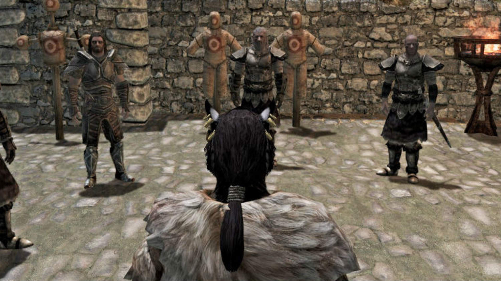
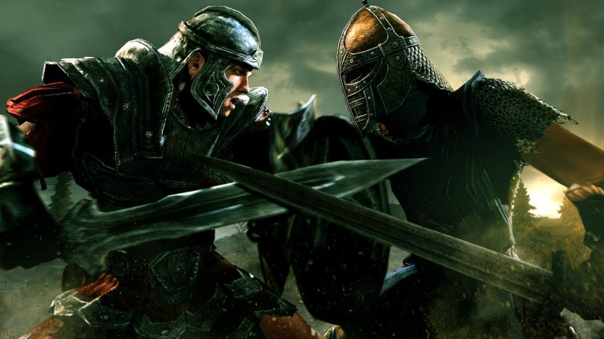
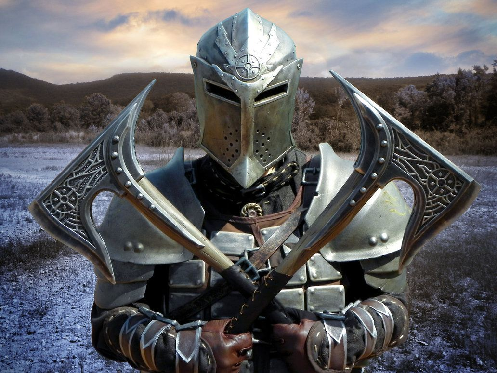

Guildas
Companions

A guilda dos Companions é um das primeiras das quais você pode se afiliar, já que é encontrada na cidade de Whiterun. Se você seguir a primeira missão da história principal, acabará indo para lá na primeira hora do game.
Dentre as diversas conversas que você tem com os NPCs da cidade, vários irão mencionar que é uma boa ideia de juntar aos Companions se quiser trabalho constante e não tiver medo de batalhas. Para fazer, basta ir à maior casa que encontrar na parte central de Whiterun (onde você verá uma grande árvore bem no meio da praça) e conversar com o personagem Jorrvaskr.
A partir daí, você receberá algumas quests menores para provar seu valor e logo terá alguns desafios mais emocionantes. Para quem já jogou outros games da franquia The Elder Scrolls, vale saber que esta é basicamente uma versão da tradicional Fighters Guild.
Dark Brotherhood

A Dark Brotherhood é facilmente uma das guildas mais populares de The Elder Scrolls, já que permite que você se torne um assassino secreto e cheio de contratos de pessoas a serem mortas. Assim como em outros games, você é recrutado depois que mata uma pessoa inocente, mas há alguns passos extras em Skyrim.
Para começar, vá Windhelm e ande pelas ruas falando com os NPCS. Eventualmente você ouvirá um rumor sobre o personagem Aventus Arentino querendo contactar os assassinos desta guilda. Vá até a casa dele e fale com o NPC para iniciar a “Innocence Lost”, que é a missão inicial da Dark Brotherhood.
Thieves Guild

A Thieves Guild é outra facção favorita dos fãs de Elder Scrolls, especialmente para quem gosta de um estilo mais sorrateiro de jogar. O bom é que ela também é uma das guildas mais simples de se entrar, bastando ir para Riften e encontrar o personagem Brynjolf.
Ele geralmente fica andando pela parte central da cidade e deve começar a falar com você automaticamente se estiver próximo. Seguindo o diálogo com ele, você começará a missão “A Chance Encounter” para entrar na Thieves Guild.
College of Winterhold

Assim como os Companions são um tipo de Fighters Guild de Skyrim, a College of Winterhold funciona facilmente como a Mages Guild de outros games da franquia. O legal é que você pode ter quase como uma experiência de escola de magia nesta nova versão.
Para se juntar a esta faculdade de magos, vá até Winterhold e siga até a ponte no meio da cidade para encontrar a personagem Faralda. Pague algum dinheiro à ela ou simplesmente use um de seus feitiços para que a NPC deixe você passar e começar seus estudos na arte da mágica. Vale mencionar que se você seguir a história principal do game, acabará indo na College of Winterhold de qualquer maneira.
Stormcloaks/Imperiais

Como você já sabe, o game se inicia com seu personagem preso e prestes a ser decapitado pela falsa acusação de fazer parte dos Stormcloaks, um grupo de nativos de Skyrim que, resumidamente, querem que as forças do império sejam removidas de lá para que a terra se torne independente e seja governada apenas pelos Nords. Do outro lado temos os Imperiais, que obviamente estão fazendo o possível para continuar no poder.
Há muitos motivos para escolher cada um dos lados dessa guerra civil, mas é preciso pensar bem antes da decisão, já que não há como mudar de ideia mais tarde. Para se juntar aos Stormcloaks, você deve ir até Wildhelm e falar com Ulfric Stormcloak para confirmar que os ajudará. Caso prefira uma aliança com os Imperiais, vá até o castelo de Solitude e fale com Rikke para dizer que prefere os ajudar durante a guerra.
Dawnguard

O DLC Dawnguard adicionou uma guilda especial para caçadores de vampiros e que você pode se juntar facilmente. Para fazer isso, simplesmente fale com alguns guardas de qualquer cidade principal de Skyrim até que eles mencionem a facção Dawnguard.
Isso fará a primeira quest ser iniciada automaticamente e você só deverá seguir o marcador da missão para encontrar os membros desta facção e poderá ser recrutado.